Kotobukiya - The Legend of Heroes
$4,930.73
Del popular juego The Legend of Heroes, de Nihon Falcom, un preciado miembro de la Clase VII, Altina Orion, ¡ahora es una figura de Kotobukiya! Altina aparece con su atuendo de viaje de The Legend of Heroes: Trails of Cold Steel IV con detalles cuidadosamente recreados. Esta figura le da vida a Altina tal como está en el juego, con un cabello que fluye suavemente y una mirada y una pose que expresan su fuerza y personalidad fugaz. Asegúrate de agregar a la chica que sostiene al Caballero de Ceniza a su lado a tu colección.
Character Vocal Series 01: Hatsune Miku Symphony (2022 Ver.)
$5,738.05
Hatsune Miku viene fielmente recreada a detalle, usando un atuendo más futurista, una pose tan coqueta e imponente, su expresión algo traviesa de su rostro y lo perfectamente recreado que esta todo su cabello y sus características coletas. Una figura estupenda, junto con las diferentes partes recreadas con material translúcido, las diferentes texturas terminan de recrear hasta el más mínimo detalle.
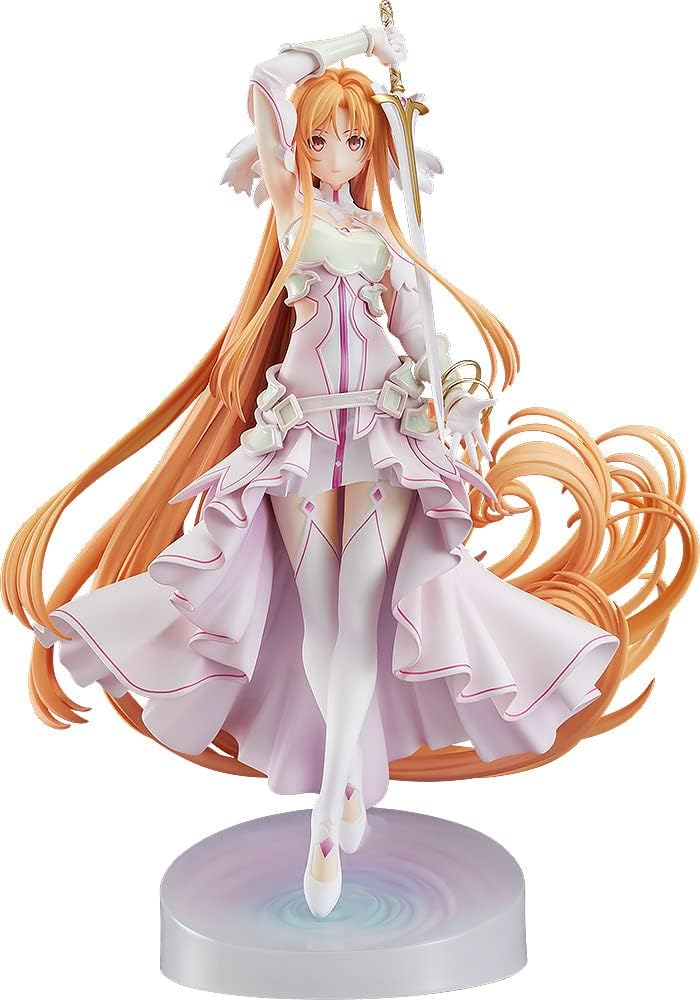
Sword Art Online Alicization: War of Underworld: Asuna
$2,579.00
De la serie de anime “Sword Art Online Alicization: War of Underworld” llega una figura a escala de Asuna como [Stacia, la Diosa de la Creación] basada en una ilustración oficial. El cabello largo y suelto de Asuna y su vestido han sido meticulosamente esculpidos con increíble detalle. Su tocado y armadura están terminados con pintura perlada para una apariencia elegante. La base de la figura presenta esculturas onduladas y pintura degradada que parecen la superficie de un cuerpo de agua.
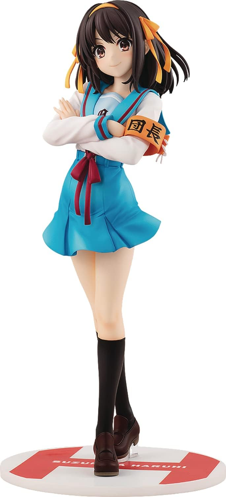
Haruhi Suzukiya Series: Light Novel Edition
$6,109.00
¡Kadokawa presenta una figura a escala 1/7 de Haruhi Suzumiya de la serie de novelas ligeras Haruhi Suzumiya! La figura está basada en la ilustración de portada de la novela ligera de 2020 La intuición de Haruhi Suzumiya. La sonrisa confiada de Haruhi y la pose familiar de brazos cruzados se han capturado fielmente en forma de figura. También se incluyen partes de la cara y los brazos intercambiables adicionales, lo que te permite exhibirla en una pose de años pasados. ¡Asegúrate de agregarla a tu colección!
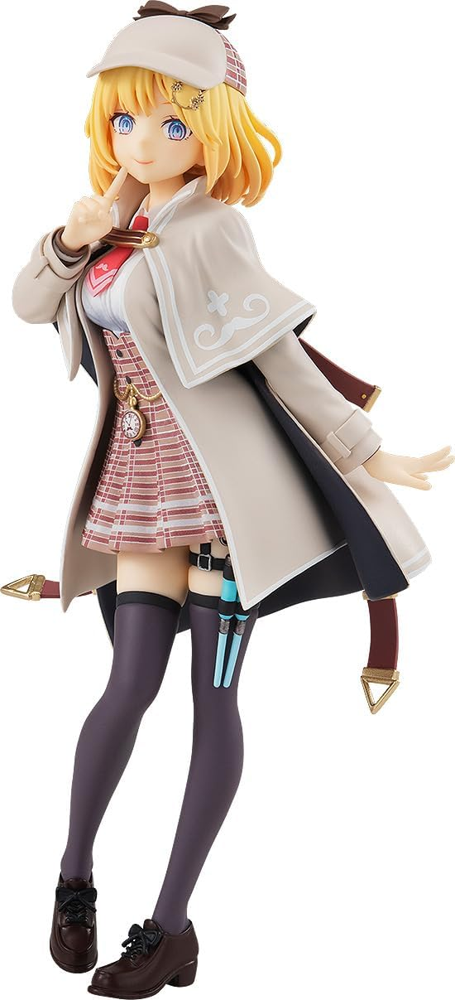
Hololive Production: Watson Amelia Pop Up Parade
$3,376.97
¡Una nueva adición al desfile emergente! Pop Up ParADE es una serie de cifras que son fáciles de coleccionar con precios asequibles y lanzamientos rápidos. Cada figura normalmente mide alrededor de 17-18 cm de altura y la serie cuenta con una amplia selección de personajes de populares series de anime y juegos, ¡y muchos más que se agregarán pronto!
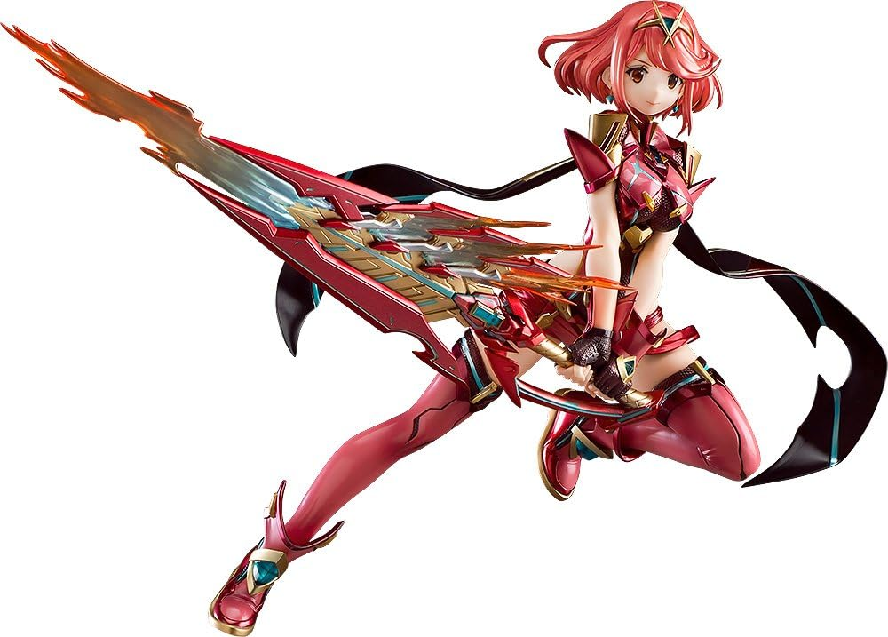
Xenoblade Chronicles 2: Pyra Figura
$5,553.52
Del juego Nintendo Switch, Xenoblade Chronicles 2 viene una figura de escala 1/7 de la legendaria hoja conocida como el Aegis: Pyra! El diseño altamente detallado del diseñador de personajes Masatsugu Saito se ha convertido fielmente en forma de figura para que los fanáticos disfruten a su lado La poderosa pero hermosa apariencia de Pyra junto con su postura dinámica y las cuidadosas diferencias de textura en su diseño se han capturado con intrincados detalles, asegúrate de añadirla a tu colección
Hatsune Miku GT Proyecto: Racing Miku (2023 Ver.)
$2,421.32
De Good Smile Racing. Revoca tu colección con el Nendoroid de la edición 2023 de Racing Miku, el personaje oficial del proyecto Hatsune Miku GT Esta figura de la serie figma, inspirada en una ilustración de Toridamono, cuenta con dos placas faciales: una cara sonriente y una cara alegre. El juego incluye accesorios adicionales como una bandera, un pájaro de apoyo del equipo y varias piezas opcionales para crear posturas dinámicas y animadas. Lleva la emoción de la carrera a tu visualización con este figma Racing Miku
Hololive Production: Yukihana Lamy Figura
$12,015.34
De MAX Factory. Hololive 5ª Generación, la representación azul Yukihana Lamy es ahora una figura a escala 1/6. Lamy ha sido capturado en forma de figura basada en una ilustración de Rin Yumama. Los finos detalles de su cabello han sido fielmente capturados en forma de figura dividiéndolo en varias partes. Su expresión suave y efímera se crea con pintura muy detallada. Ciertamente no te encontrarás llamándola "cara de hígado". Su falda está hecha con materiales translúcidos para un aspecto transparente. Los patrones de copo de nieve y cuadros de su atuendo han sido perfectamente capturados en forma de figura. Yukimin y ventiladores hololive por igual, asegúrate de añadir esta figura a escala 1/6 de Yukihana Lamy a tu colección
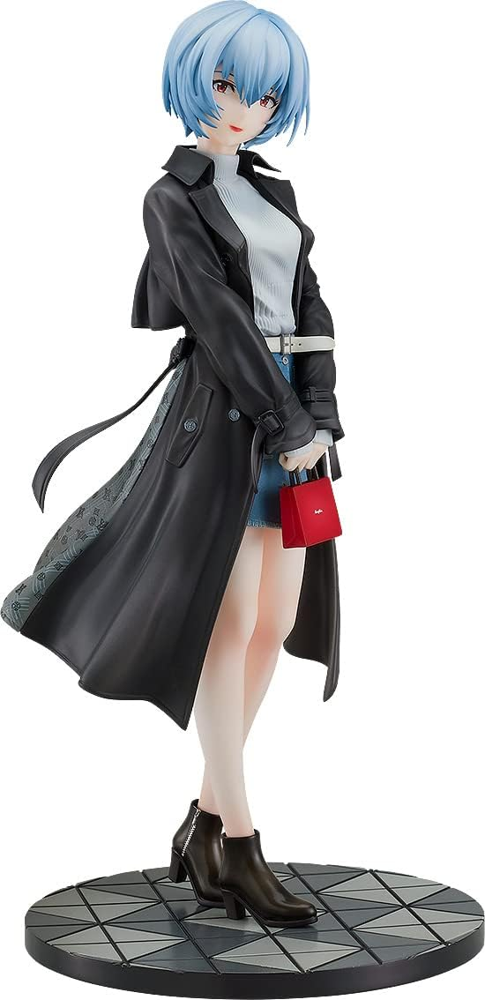
Rebuild of Evangelion - Rei Ayanami Red Rouge
$3,295.02
De la serie de películas animadas "Rebuild of Evangelion" viene una figura a escala 1/7 de Rei Ayanami. El aura madura del diseño de Mai Yoneyama con Rei Ayanami con un llamativo lápiz labial rojo ha sido perfectamente capturado. Con un encanto ligeramente diferente en comparación con su apariencia de anime, ¡esta figura es imprescindible para los fanáticos de la serie!
Wandering Witch The Journey Of Elaina - Elaina
$4,199.00
Con una túnica negra y un sombrero triangular, reproduje a la linda Elaina que compra y come donas. Además de posar con sensación de dinamismo y modelar el cabello, fui particular en el modelado y coloración de pequeños artículos como broches, escobas, bolsos, bufandas, etc., que son a prueba de brujas. El sombrero es desmontable. Debido a que es un personaje severo, por favor disfruta de una bruja de cenizas “Elaina” en todos los rincones a tu alcance por todos los medios.
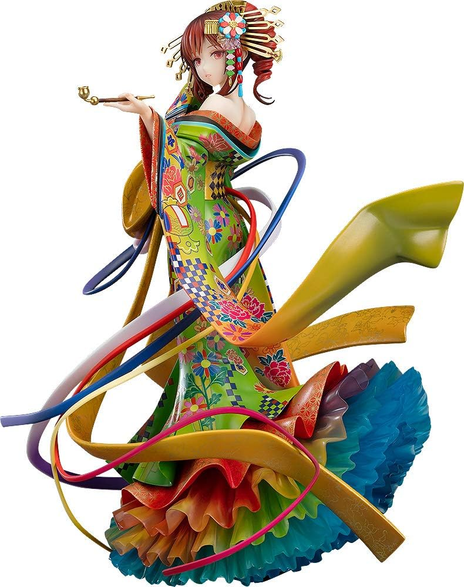
Utau Kasane Teto (Yoshiwara Lament Version)
$6,519.63
De Good Smile Company. "Bienvenidos, por favor pasen". De la canción original de Kasane Teto, Yoshiwara Lament de Mayo Yamato y Asa, ¡llega una figura a escala 1/7 de Kasane Teto con un hermoso atuendo de cortesana basado en la ilustración de portada de Fuzichoco! La encantadora ilustración se ha transformado en una figura fascinante y de colores vivos. Se utilizan partes translúcidas para crear las capas coloridas en el dobladillo de su kimono. Ella descubre sus hombros y espalda mientras se gira para mostrar una expresión apática, emitiendo un aura diferente en comparación con la típica Kasane Teto. Asegúrese de agregar esta figura a escala hermosamente detallada de Kasane Teto a su colección.
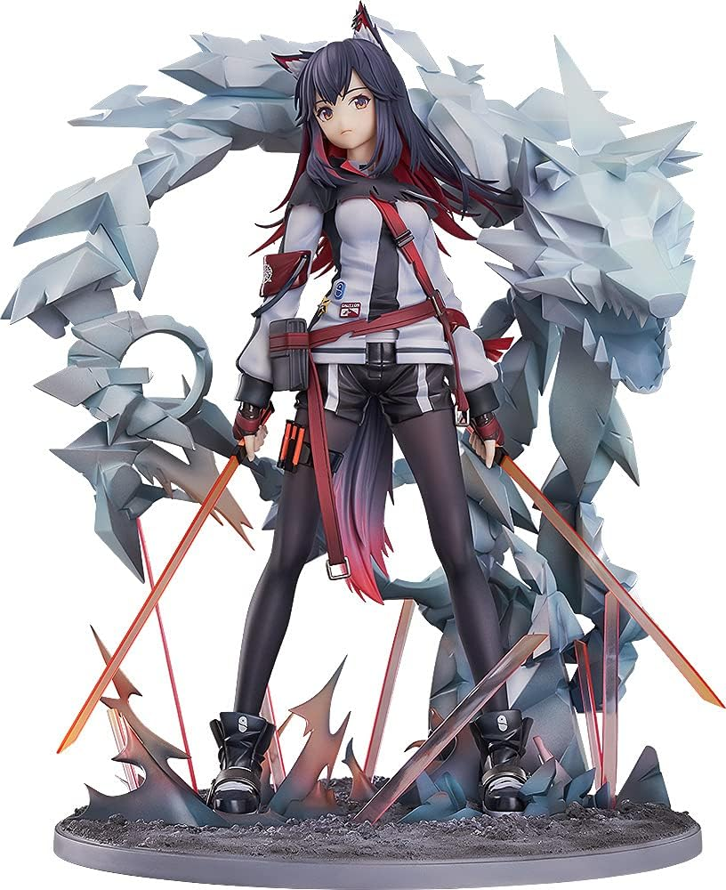
Arts Shanghai Arknights Texas: Elite 2
$13,390.74
Del popular juego para smartphones Arknights llega una figura a escala de Texas, miembro de Penguin Logistics, basada en su ilustración de Elite 2. El cabello al viento de Texas, las brillantes espadas firmemente plantadas en el suelo y su lobo que aparece en el fondo de la ilustración han sido capturados fielmente, lo que le da la apariencia de una noble guerrera en el campo de batalla. La figura ha sido creada con pintura texturizada detallada y presenta una base increíblemente detallada hecha a imagen de un páramo desgastado por la batalla. ¡Asegúrate de agregarla a tu colección!
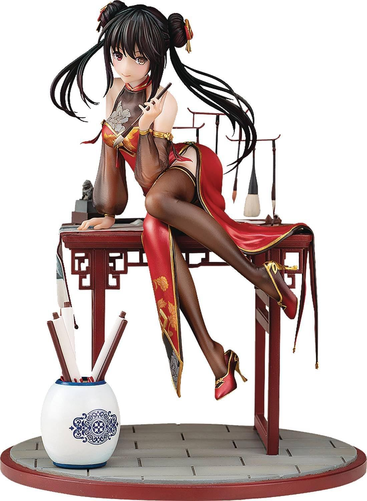
Date A Live IV: Kurumi Tokisaki (versión de Belleza caligráfica) Figura
$4,095.74
De Kadokawa. From Date A Live IV viene una figura de Kurumi Tokisaki con un atractivo vestido chino Se sentó encima de un escritorio con un pincel en la mano, Kurumi parece estar tomando un descanso después de familiarizarse con el arte de la pintura y la caligrafía. El ambiente de la figura equilibra perfectamente el lujo y la relajación, con el elegante atuendo de Kurumi, la cara sonriente suavemente, la postura relajada y los zapatos colgando de las puntas de sus pies capturados con hermosos detalles. Asegúrate de añadir esta elegante y única figura de Kurumi Tokisaki a tu colección
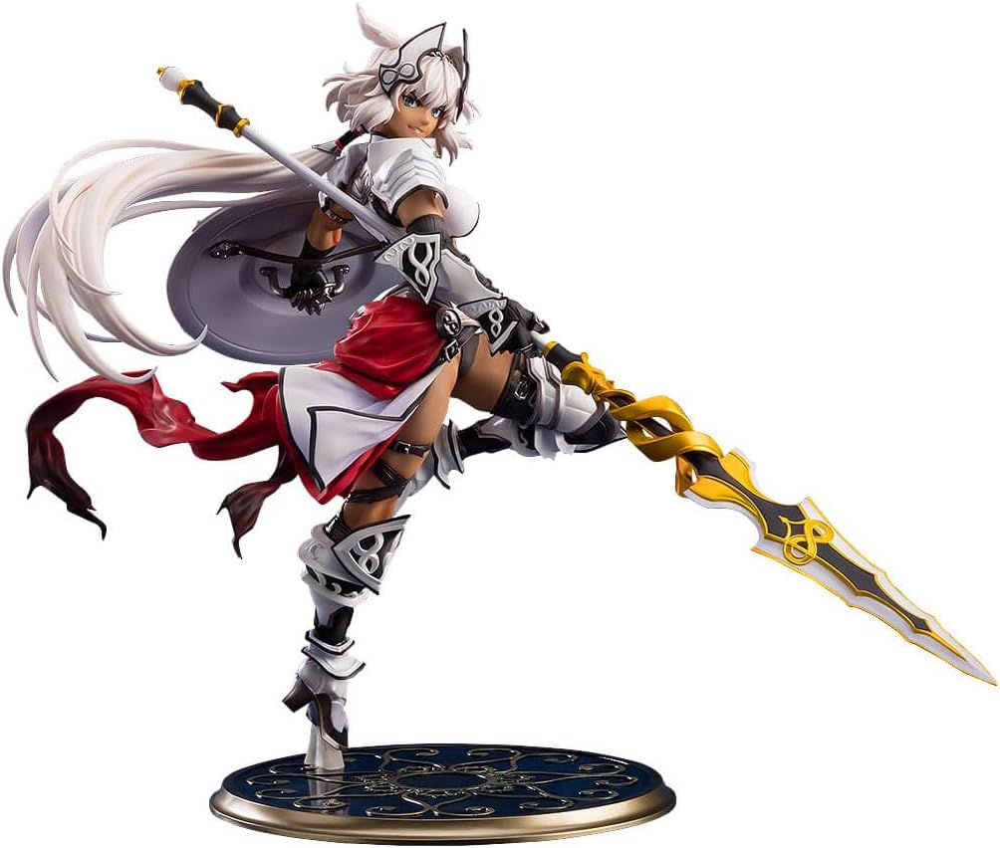
Fate/Grand Order: Lancer/Caenis Figura
$5,298.02
Del popular juego para smartphones Fate/Grand Order llega una figura a escala del sirviente de clase Lancer Caenis basada en la ilustración visual clave de la Parte 2 del juego. El físico musculoso de Caenis, vestido con una armadura blanca tiza, un escudo redondo y una lanza larga decorada con oro, ha sido fielmente capturado en forma de figura. La figura también viene con una base hecha a imagen de un relieve de piso olímpico. Asegúrate de agregar esta figura de Caenis, el Argonauta y Espíritu Divino con la bendición de Poseidón, a tu colección.
Bakemonogatari Senjogahara Hitagi
$5,449.60
Del popularísimo Bakemonogatari llega la adorable heroína Hitagi Senjougahara. Representada exactamente como era en uno de los momentos clave del anime, Senjougahara se levanta ligeramente la falda para revelar un material de papelería oculto. Esos materiales han sido recreados minuciosamente, uno por uno, en esta increíble figura para lograr un impacto visual inigualable. Y con la ayuda de las piezas opcionales incluidas, ¡incluso puedes elegir mostrarla con la falda bajada y sosteniendo grapadoras en sus manos!
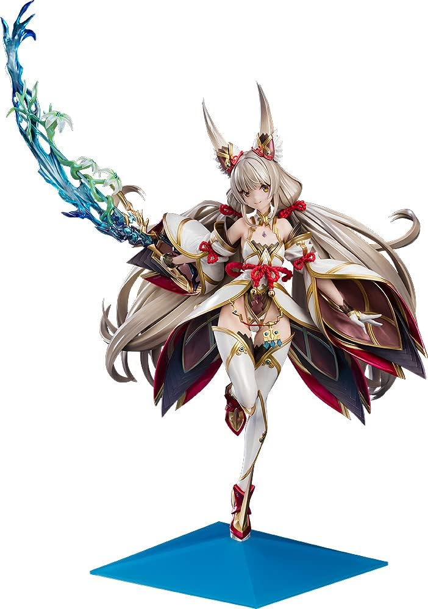
Xenoblade Chronicles 2: Nia Figura
$7,330.88
Del juego de Nintendo Switch, Xenoblade Chronicles 2 viene una figura a escala de Nia en su forma despertada. La apariencia digna y hermosa de Nia ha sido cuidadosamente capturada en forma de figura basada en una ilustración del diseñador de personajes Masatsugu Saito Las piezas translúcidas y la pintura de perlas se han utilizado en toda la figura, capturando perfectamente las texturas distintivas de los materiales que componen su atuendo.
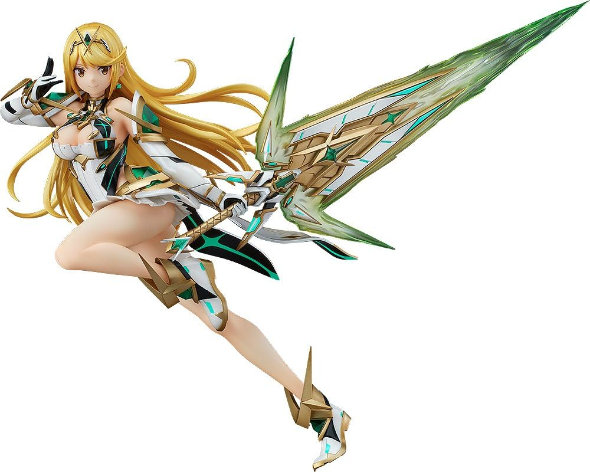
Xenoblade Chronicles 2 - Mythra
$5,465.19
Del juego de Nintendo Switch, Xenoblade Chronicles 2 viene una figura a escala de Mythra. La apariencia digna y hermosa ha sido cuidadosamente capturada en forma de figura basada en una ilustración del diseñador de personajes Masatsugu Saito Las piezas translúcidas y la pintura de perlas se han utilizado en toda la figura, capturando perfectamente las texturas distintivas de los materiales que componen su atuendo.
Kurumi Tikusaki (Zafkiel)
$4,534.99
De la popular serie de novelas de luz Date A Live viene una figura a escala 1/7 de Kurumi Tokisaki basada en una ilustración del ilustrador principal de la serie Tsunako. Su atuendo naranja ha sido fielmente recreado con el uso de piezas translúcidas. La figura también viene con partes intercambiables como una parte de cara loca que se puede intercambiar por su cara sonriente junto con una parte de mano alternativa para mostrar su sosteniendo Zafkiel. La base de la figura cuenta con un diseño de reloj. Asegúrese de agregarla a su colección!
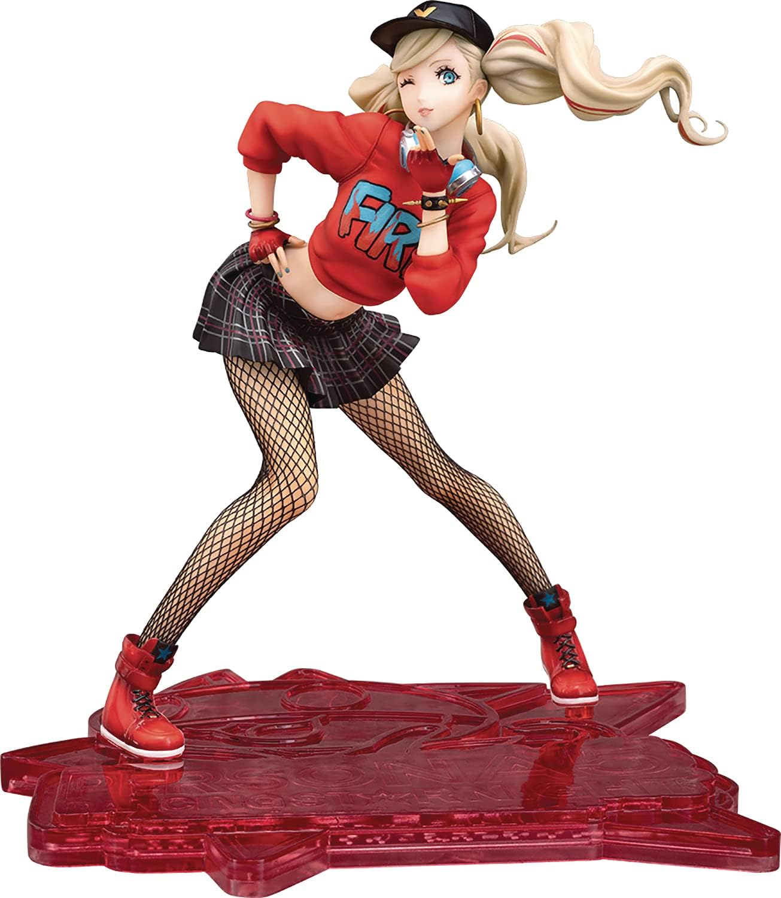
PHAT Persona 5: Dancing in Starlight: ANN Takamaki Figura
$4,331.71
¡De Phat! Del juego de ritmo de la serie Persona 5: Dancing in Starlight viene una figura a escala de Ann Takamaki Ha sido recreada en una pose guiñosa en su atuendo de escenario de pelota basado en la imagen clave del juego. Sus medias cuentan con un material de red real para una apariencia realista, y su sombrero se puede quitar para una opción de visualización diferente. También se incluye una base elegante con el logotipo del juego.
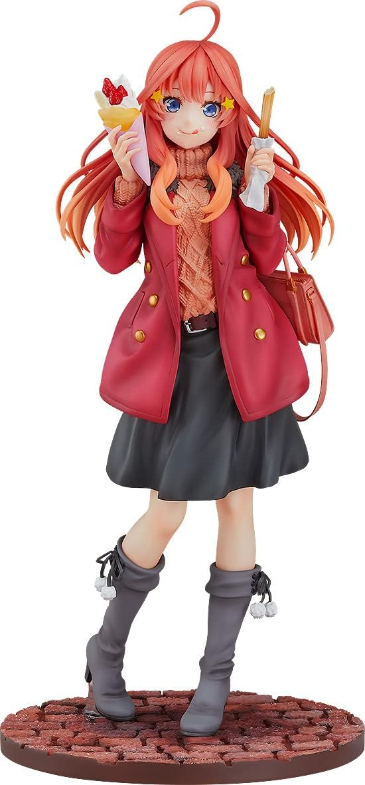
The Quintessential Quintuplets May Nakano Date Style Versión
$3,158.79
De la serie de anime Go-Toubun no Hanayome ∬, segunda temporada de la popular serie de anime "Go-Toubun no Hanayome" (The Quintessential Quintuplets), Good Smile Company presenta la figura a escala 1/6 que le dedica a Itsuki Nakano, la quinta hermana de las quintillizas Nakano.
Evangelion Collector´s Edition N.3
$359.00
Shinji comienza a relacionarse mejor con sus amigos y sus compañeros en medio de las batallas contra los ángeles y, gracias a Kaji, recuerda detalles importantes acerca de su pasado. Por su parte, Misato descubre secretos por demás estremecedores escondidos en las entrañas de Nerv.
Evangelion Collector's Edition N.2 - Manga
$359.00
Rei Ayanami es un misterio para Shinji, quien lucha para poder comunicarse con ella; sin embargo, poco a poco se percata de que comparten emociones muy similares. Finalmente, la necesidad de acabar con un ángel hace que ambos se entiendan mejor y encuentren solaz en el otro. Poco después, Asuka, una chica genio, llega a Japón para pilotar el EVA 02.
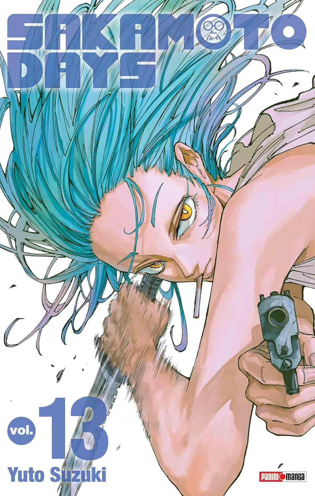
Sakamoto Days N.13
$310.47
Sakamoto, Nagumo y Akao eran muchachos muy problemáticos cuando estudiaban en el CFA. Para evitar que los expulsen de la escuela, los tres, junto con su misterioso compañero Uzuki, se embarcan en una misión muy especial. ¡Se infiltran en la tienda departamental de los sicarios en busca de su objetivo, pero...!
Naruto Gold Edition N.21
$269.00
¡Pain y Konan finalmente van tras Jiraiya, quien se infiltró en Amegakure! ¡La verdadera identidad del líder de Akatsuki resulta ser alguien a quien Jiraiya conoce muy bien! ¡¿Cuál es su relación y qué clase de poder temible posee Pain, a quien llaman "Dios"?! ¿Jiraiya logrará descifrar el misterio? Mientras tanto, Sasuke por fin se encuentra cara a cara con Itachi. ¡La gran confrontación entre hermanos comienza!
Naruto. Vol. 42
$110.11
Pain vive y Jiraiya necesita desesperadamente conocer la verdad detrás de sus múltiples rostros, aunque pierda la vida en ello. Mientras tanto, Naruto y los ninjas de Konoha deben derrotar a Tobi, el nuevo “Madara Uchiha”, si desean encontrar a Sasuke; pero Itachi ha preparado todo para enfrentarse a su hermano y revelarle la verdad acerca de la muerte de sus padres y el terrible secreto del Mangekyo. ¡No te pierdas este emocionante y terrible volumen de Naruto!
Re: Zero Starting Life in Another World 1: Volume 1
$307.98
Subaru Natsuki estaba tratando de llegar a la tienda de conveniencia, pero terminó invocado a otro mundo. Se encuentra con las cosas habituales: situaciones que amenazan su vida, bellezas de cabello plateado, hadas felinas... ya sabes, cosas normales. Todo eso sería bastante malo, pero también ha obtenido la habilidad mágica más inconveniente de todas: viajar en el tiempo, pero debe morir para usarla. ¿Cómo le pagas a alguien que te salvó la vida cuando lo único que puedes hacer es morir?
Re:Zero Starting Life in Another World: 3: Volume 3
$568.30
Pongamos en marcha esta historia. Junto a las personas más importantes para él, un niño sale a encontrarse con el mismo amanecer una vez más. Fortaleciendo su determinación, Subaru regresa a su primer día en la mansión. Repitiendo su ciclo en la casa de los Roswaal armado con sus recuerdos, Subaru intenta tomar solo las decisiones óptimas para evitar otra tragedia, pero su miedo y su obsesión por evadir la muerte y el fracaso lo están deformando lentamente. Mientras Subaru se desmorona lentamente tratando de salvar a todos... ¿quién salvará a Subaru...?
Re:ZERO - Starting Life in Another World - Volume 4
$247.37
Por fin, Subaru puede disfrutar de un respiro... hasta que un enviado llega para hablar sobre la selección real. Decidido a ayudar a Emilia a ganar el trono, Subaru la acompaña a la capital, pero la propia Emilia rechaza obstinadamente su ayuda. A medida que aumenta la tensión entre los candidatos reales, también lo hace la fricción en la relación de la pareja. ¿La devoción de Subaru ha ido demasiado lejos?
Oshi No Ko N.2
$169.00
De la serie de anime Go-Toubun no Hanayome ∬, segunda temporada de la popular serie de anime "Go-Toubun no Hanayome" (The Quintessential Quintuplets), Good Smile Company presenta la figura a escala 1/6 que le dedica a Itsuki Nakano, la quinta hermana de las quintillizas Nakano.
Oshi no Ko N.1
$169.00
La historia sigue a un ginecólogo llamado Gorou Amemiya, quien es un gran admirador de una joven idol Ai Hoshino. Un día, Ai aparece en su hospital, embarazada de gemelos, y Gorou termina involucrándose en su vida de una manera inesperada cuando es asesinado por un acosador de Ai. En su siguiente vida, Gorou renace como uno de los hijos de Ai, conservando sus recuerdos de su vida pasada. Junto a su hermana gemela, también renacida con recuerdos de una vida anterior, tratan de proteger a su madre y enfrentarse a la dura realidad de la industria del entretenimiento.
Goblin Slayer N.15
$169.00
El equipo de Goblin Slayer, junto a la granjera y a la recepcionista, se dirigen a la villa de los elfos… justo cuando les ataca una manada de duendes. Por si fuera poco, una bestia gigante amenaza el Bosque Elfo y, ante las dudas de sus habitantes… ¡Goblin Slayer se adentrará en esa sagrada arboleda para comenzar con la cacería de duendes! ¡Con una historia inédita del autor, Kumo Kagyu!
Adiós, Eri N.1
$159.00
"Quiero que me grabes hasta que muera" Yuta comienza a grabar películas a petición de su madre enferma. Después de la muerte de esta, Yuta piensa en suicidarse, pero conoce a una extraña y hermosa chica, Eri. Ambos comienzan a hacer películas juntos, aunque Eri esconde un secreto. ¡Un relato juvenil hecho película donde la realidad y la ficción se entrelazan y explotan!
Full Metal Alchemist Lux Edition N.4
$319.00
En un ritual alquímico que salió mal, Edward Elric perdió su brazo y su pierna, y su hermano Alphonse se convirtió en nada más que un alma dentro de una armadura. Al encontrarse en una encrucijada, los hermanos buscan la guía de una maestra, pero sus lecciones son más difíciles de dominar que cualquier alquimia
Full Metal Alchemist Lux Edition N.1
$638.06
En un ritual alquímico que salió mal, Edward Elric perdió su brazo y su pierna, y su hermano Alphonse se convirtió en nada más que un alma dentro de una armadura. Aquí comienza su viaje para restaurar sus cuerpos a través del poder de la Piedra Filosofal.
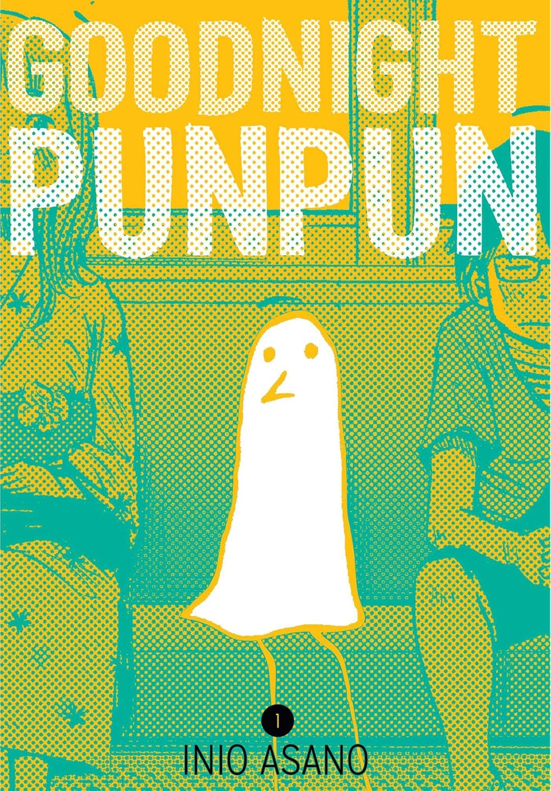
Goodnight Punpun, Vol. 1
$433.27
Esta es la historia de la mayoría de edad de Punpun Onodera. El matrimonio de sus padres se está desmoronando. Su padre va a la cárcel y su madre al hospital. Tiene que vivir con su tío perdedor. Está enamorado de una chica que vive en una secta extraña. Punpun intenta hablar con Dios sobre sus problemas, pero Dios es un idiota. Punpun sigue esperando que las cosas mejoren, pero en realidad no es así.
Conozcan a Punpun Punyama. Es un niño normal en un pueblo normal.
Quiere ganar un Premio Nobel y salvar al mundo.
Quiere que la chica de la que está enamorado le guste también.
Quiere encontrar algo de pornografía.
Eso es lo que quiere, pero ¿qué obtiene...?
Goodnight Punpun, Vol. 2
$441.24
Esta es la historia de la mayoría de edad de Punpun Onodera. El matrimonio de sus padres se está desmoronando. Su padre va a la cárcel y su madre al hospital. Él tiene que vivir con su tío perdedor. Está enamorado de una chica que vive en una secta extraña. Punpun intenta hablar con Dios sobre sus problemas, pero Dios es un idiota. Punpun sigue esperando que las cosas mejoren, pero en realidad no es así.
Punpun era un niño normal en un pueblo normal...
Pero las cosas han cambiado.
El amor de su vida quiere matarlo.
Sus padres se divorciaron.
Y Dios está siendo malo con él.
¿Qué vas a hacer ahora, Punpun?
Goodnight Punpun, Vol. 3: Volume 3
$433.56
Esta es la historia de la mayoría de edad de Punpun Onodera. El matrimonio de sus padres se está desmoronando. Su padre va a la cárcel y su madre al hospital. Él tiene que vivir con su tío perdedor. Está enamorado de una chica que vive en una secta extraña. Punpun intenta hablar con Dios sobre sus problemas, pero Dios es un idiota. Punpun sigue esperando que las cosas mejoren, pero realmente no es así.
Como la mayoría de los niños de su edad, Punpun está en la escuela secundaria.
De hecho, ha logrado ingresar a la mejor escuela secundaria de la ciudad.
Es un estudiante muy bueno.
Estudia para no tener que pensar en su vida.
Tal vez un meteorito se estrelle contra la Tierra y destruya todo.
Un hombre puede desear, Punpun...
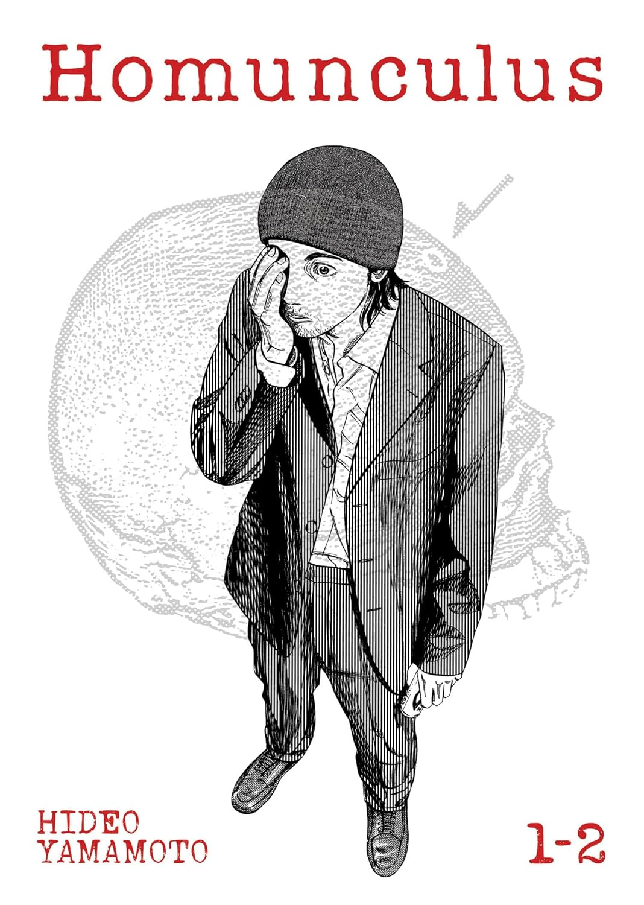
Homunculus 1-2
$465.39
Nakoshi Susumu, de treinta y cuatro años, vive en su coche. Entre pasar los días con los sin techo y las noches en su vehículo, tiene poco que contar. Cuando un estudiante de medicina empieza a acosarlo y le ofrece pagarle una importante suma de dinero para que se someta a una extraña intervención quirúrgica, Nakoshi se niega en un principio. Pero después de que la grúa se lleve su amado coche, finalmente acepta la oferta y se somete a la mesa de operaciones. ¿Qué verá Nakoshi de forma diferente, si es que ve algo diferente, una vez que despierte?
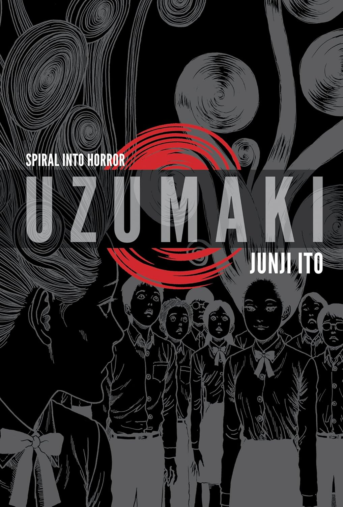
Uzumaki (Edición Deluxe)
$916.00
¡Una obra maestra del manga de terror, ahora disponible en una edición de lujo de tapa dura en inglés!
Kurôzu-cho, un pequeño pueblo en la costa de Japón, está maldito. Según Shuichi Saito, el novio retirado de la adolescente Kirie Goshima, su pueblo no está embrujado por una persona o un ser, sino por un patrón: uzumaki, la espiral, la hipnótica forma secreta del mundo. Se manifiesta en todo, desde conchas marinas y remolinos en el agua hasta las marcas en espiral en el cuerpo de las personas, las locas obsesiones del padre de Shuichi y la voz de la cóclea en nuestro oído interno. A medida que la locura se extiende, los habitantes de Kurôzu-cho son arrastrados cada vez más profundamente en un remolino del que no hay retorno!
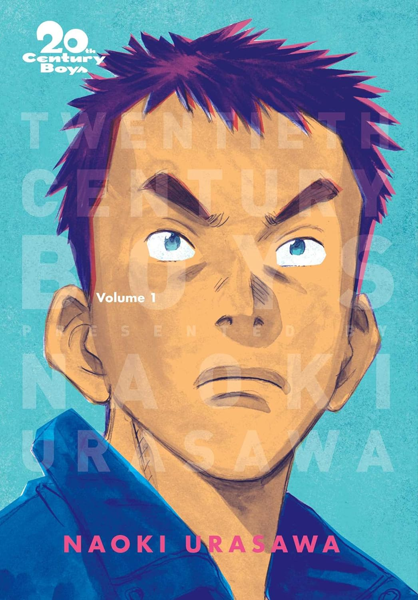
20th Century Boys: The Perfect Edition, Vol. 1: Volume 1
$350.32
¡Una edición de lujo encuadernada de la galardonada epopeya de Naoki Urasawa sobre cultos del fin del mundo, robots gigantes y un grupo de amigos que intentan salvar al mundo de la destrucción!
La humanidad, que se enfrentó a la extinción a fines del siglo XX, no habría entrado en el nuevo milenio si no fuera por ellos. En 1969, durante su juventud, crearon un símbolo. En 1997, cuando el desastre que se avecina comienza a desarrollarse lentamente, ese símbolo regresa. Esta es la historia de un grupo de niños que intentan salvar al mundo.
¡Una edición de lujo encuadernada de la galardonada epopeya de Naoki Urasawa sobre cultos del fin del mundo, robots gigantes y un grupo de amigos que intentan salvar al mundo de la destrucción!
La humanidad, que se enfrentó a la extinción a fines del siglo XX, no habría entrado en el nuevo milenio si no fuera por ellos. En 1969, durante su juventud, crearon un símbolo. En 1997, cuando el desastre que se avecina comienza a desatarse lentamente, ese símbolo regresa. Esta es la historia de un grupo de chicos que intentan salvar el mundo.
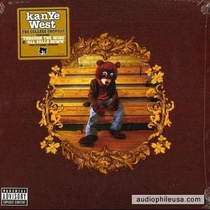
The college dropout vinyl by Kanye West
$479
El vinilo del álbum The College Dropout de Kanye West es una representación icónica de su debut musical, lanzado originalmente en 2004. Este álbum marcó el inicio de una carrera legendaria en la música hip-hop, mostrando un enfoque innovador que combina letras introspectivas con temas sociales y una producción única.
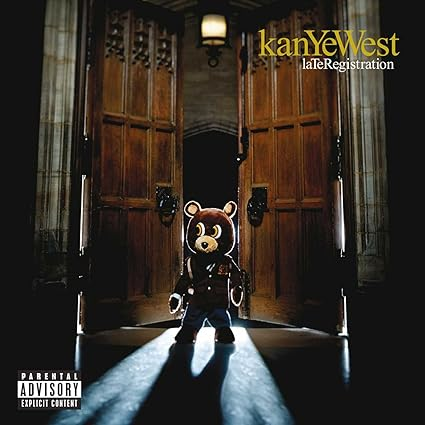
Late registration vinyl by Kanye West
$683
El vinilo del álbum Late Registration de Kanye West es una obra destacada tanto musical como visualmente, lanzada en 2005 como el segundo álbum de estudio del artista. Este proyecto continúa la narrativa de The College Dropout, llevando su creatividad a nuevos niveles con colaboraciones ambiciosas y una producción más orquestal.
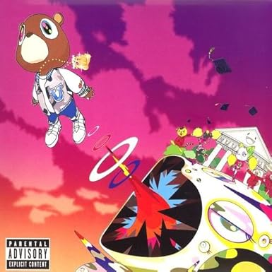
Graduation vinyl by Kanye West
$789
El vinilo del álbum Graduation de Kanye West, lanzado en 2007, es una pieza vibrante y futurista que refleja la evolución artística del artista. Este tercer álbum de Kanye cerró su trilogía educativa (The College Dropout, Late Registration, Graduation) con un sonido más experimental, influenciado por géneros como el synth-pop y la electrónica, y una estética visual completamente distinta, diseñada por el artista japonés Takashi Murakami.
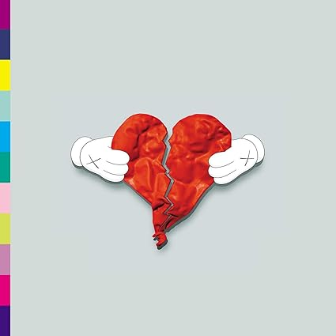
808s and heartbreak vinyl by Kanye West
$745
El vinilo de 808s & Heartbreak de Kanye West, lanzado en 2008, es una obra minimalista y emotiva que redefine los límites del hip-hop y el R&B. Este cuarto álbum marcó un cambio radical en el estilo de Kanye, destacándose por su uso intensivo del auto-tune, ritmos electrónicos y una atmósfera melancólica, influenciada por experiencias personales como la pérdida de su madre y el fin de una relación significativa.
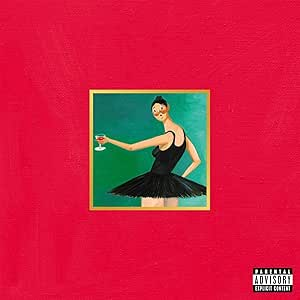
My beautiful dark twisted fantasy vinyl by Kanye West
$1287
El vinilo de My Beautiful Dark Twisted Fantasy, lanzado en 2010, es una obra maestra visual y musical que refleja el apogeo de la ambición artística de Kanye West. Este quinto álbum de estudio combina hip-hop, rock progresivo, soul y música clásica, acompañado de una estética opulenta y provocadora. La edición en vinilo es un objeto de culto tanto para fanáticos como para coleccionistas.
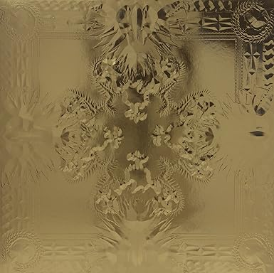
Watch the throne vinyl by Kanye West and JayZ
$2067
El vinilo de Watch the Throne, lanzado en 2011, es una colaboración icónica entre Kanye West y Jay-Z que fusiona lujo, poder y arte en un formato musical revolucionario. Este álbum combina temas de grandeza, legado y cultura con un diseño visual que refleja su opulencia y sofisticación.
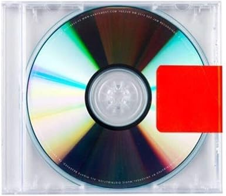
Yeezus vinyl by Kanye West
$952
El vinilo de Yeezus, lanzado en 2013, es tan crudo y provocador como el álbum mismo. Este sexto trabajo de Kanye West rompió con las convenciones musicales y visuales, ofreciendo un proyecto minimalista, industrial y audaz, que sigue siendo una de sus obras más discutidas e influyentes.
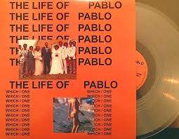
The life of pablo vinyl by Kanye West
$1014
El vinilo de The Life of Pablo, lanzado originalmente en formato digital en 2016, es una pieza de gran interés para coleccionistas debido a la evolución de su diseño y contenido. Este séptimo álbum de Kanye West es caótico, experimental y personal, reflejando múltiples facetas de su vida y arte.
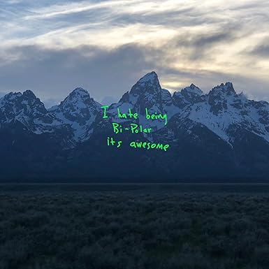
Ye vinyl by Kanye West
$743
El vinilo de ye, lanzado en 2018, encapsula el minimalismo y la introspección del octavo álbum de estudio de Kanye West. Este proyecto breve pero impactante explora temas como la salud mental, las relaciones y la espiritualidad, y su diseño físico refleja su enfoque íntimo y directo.
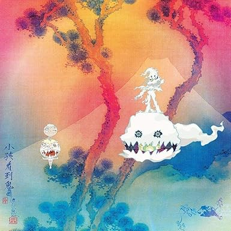
Kids see ghosts vinyl by Kanye West and Kid cudi
$647
El vinilo de Kids See Ghosts, lanzado en 2018, es una colaboración entre Kanye West y Kid Cudi que combina rap experimental, rock psicodélico y exploraciones temáticas profundas de la salud mental, el renacimiento espiritual y la redención. Este álbum de culto, aclamado tanto por fans como por críticos, cuenta con un diseño visual tan impactante como su música.
Jesus is king vinyl by Kanye West
$1560
El vinilo de Jesus Is King, lanzado en 2019, marca una de las transiciones más significativas en la carrera de Kanye West, al presentarse como un álbum profundamente espiritual y religioso. Este proyecto es una inmersión en el gospel, el rap y la música electrónica, reflejando su conversión al cristianismo y su exploración de la fe a través de su arte. El diseño del vinilo complementa perfectamente la temática del álbum, brindando una experiencia visual y auditiva única.
Donda vinyl by Kanye West
$762
El vinilo de Donda, lanzado en 2021, es un proyecto monumental y emotivo de Kanye West, que rinde homenaje a su difunta madre, Donda West. Este álbum, que explora el duelo, la redención, el perdón y temas espirituales, también se caracteriza por su ambiciosa producción y el enfoque experimental que Kanye ha hecho característico de su estilo. El diseño del vinilo refleja la grandeza y la profundidad del álbum, fusionando el arte y la emoción en un formato tangible.
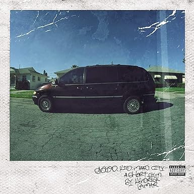
Good kid maad city vinyl by Kendrick lamar
$949
El vinilo de good kid, m.A.A.d city, lanzado en 2012, es el aclamado álbum debut de Kendrick Lamar, que lo catapultó a la fama y consolidó su lugar como uno de los artistas más importantes del hip-hop contemporáneo. Con una narrativa centrada en la vida en Compton, las luchas de la juventud y la reflexión sobre las decisiones, el álbum es una obra maestra tanto en contenido como en producción. El diseño del vinilo refleja la complejidad de este proyecto y su visión artística.
To pimp a butterfly vinyl by Kendrick lamar
$741
El vinilo de To Pimp a Butterfly, el segundo álbum de estudio de Kendrick Lamar, lanzado en 2015, es una de las obras más influyentes y aclamadas del hip-hop contemporáneo. Este álbum, que mezcla géneros como el jazz, el funk, el soul y el rap, ofrece una reflexión profunda sobre temas como el racismo, la opresión, la identidad y la lucha personal. El diseño del vinilo complementa perfectamente la complejidad y la ambición del álbum, creando una experiencia visual y auditiva única.
Damn vinyl by Kendrick lamar
$697
El vinilo de DAMN., el cuarto álbum de estudio de Kendrick Lamar, lanzado en 2017, es una de las obras más aclamadas de la última década en el género del rap. DAMN. es un álbum introspectivo, complejo y emocional, con una producción minimalista que se mezcla con letras profundas sobre la identidad, el conflicto interno, la espiritualidad, y las tensiones sociales. El diseño del vinilo refleja tanto la naturaleza cruda y directa del álbum como su impacto cultural.
Mr morale and the big steppers vinyl by Kendrick lamar
$1340
El vinilo de Mr. Morale & The Big Steppers, lanzado en 2022, es el quinto álbum de estudio de Kendrick Lamar y marcó un regreso triunfal después de cinco años desde su último proyecto. Este álbum es una exploración profunda de temas personales y sociales, abarcando la salud mental, la redención, el trauma y la autoaceptación, mientras mantiene la maestría lírica y la innovación sonora que caracteriza a Kendrick. El diseño del vinilo refleja la complejidad del álbum, con una estética que se complementa con los temas de introspección y crecimiento personal que dominan la narrativa.
Call me if you get lost Vinyl By Tyler, the creator
$764
El vinilo de Call Me If You Get Lost, el aclamado álbum de Tyler, The Creator, lanzado en 2021, es una obra que muestra su evolución como artista, fusionando rap, soul, R&B y sonidos experimentales en una experiencia auditiva única. Este álbum, que fue muy bien recibido tanto por la crítica como por los fanáticos, es un reflejo de la madurez artística de Tyler, explorando temas de amor, autodescubrimiento, éxito y la búsqueda de la libertad personal. La edición en vinilo de Call Me If You Get Lost captura toda esta complejidad a través de su diseño visual y producción.
Long live a$ap Vinyl By A$ap Rocky
$1011
El vinilo de Long.Live.A$AP, el álbum debut de A$AP Rocky, lanzado en 2013, es una obra fundamental en su carrera, consolidándolo como una de las principales figuras del rap contemporáneo. El álbum combina una mezcla de influencias del rap clásico de Nueva York, el sur de Estados Unidos y una estética muy ligada al arte y la moda, características que Rocky ha sabido incorporar a lo largo de su carrera. Long.Live.A$AP presenta una producción exuberante y un flujo único de A$AP Rocky, con temas que exploran el éxito, el lujo, las relaciones y la vida en la calle. El vinilo de este álbum captura esa esencia vibrante y sofisticada, ofreciéndole a los fanáticos una experiencia auditiva envolvente.
Rodeo Vinyl By Travis scott
$923
El vinilo de Rodeo, el segundo álbum de estudio de Travis Scott, lanzado en 2015, es una pieza clave en la evolución de la música hip-hop contemporánea. Este álbum marcó un antes y un después en la carrera de Travis Scott, consolidándolo como una de las principales figuras del rap y de la música urbana. Rodeo es una obra que fusiona géneros, incluyendo el trap, el rap psicodélico y la música experimental, creando un sonido único que no solo destaca por su producción innovadora, sino también por su enfoque conceptual y visual. La edición en vinilo de Rodeo captura todos estos elementos, ofreciendo una experiencia auditiva rica y envolvente que resalta la atmósfera expansiva del álbum.
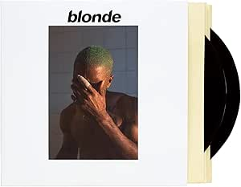
Blonde Vinyl By Frank ocean
$3551
El vinilo de Blonde, el aclamado segundo álbum de Frank Ocean, lanzado en 2016, es una pieza fundamental dentro del mundo de la música contemporánea. Con este álbum, Frank Ocean rompió con las expectativas previas, ofreciendo una obra profundamente personal y experimental que no solo reconfigura el R&B, sino que también explora nuevas fronteras sonoras, emocionales y conceptuales. Blonde es un álbum lleno de matices, que mezcla soul, electrónica, y pop alternativo con una producción minimalista y atmosférica. La edición en vinilo de Blonde captura perfectamente la sensación íntima y etérea del álbum, proporcionando una experiencia auditiva profunda y enriquecedora.
Estás por vaciar el carrito, ¿quieres continuar?